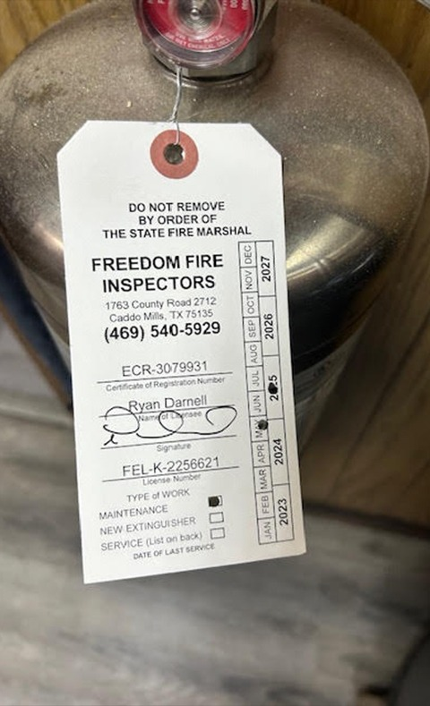
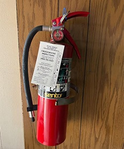
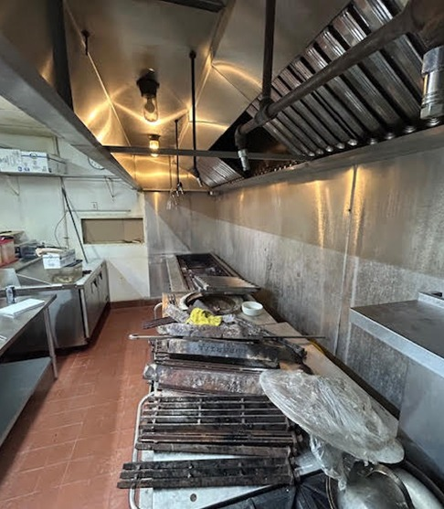
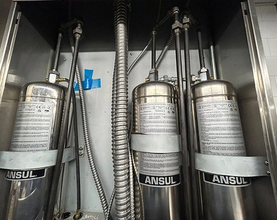
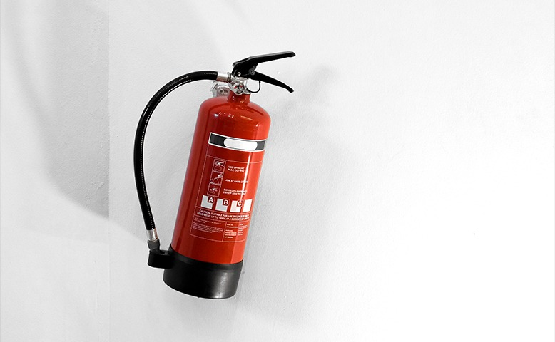

For restaurants, hotels, bars, food trucks, and commercial kitchens, Freedom Fire Inspectors offers NFPA-certified & licensed fire safety inspections and extinguisher services across DFW & East Texas Zain chughtai

Year of Experience

Founded in 2023, Freedom Fire Inspectors provides commercial fire protection services for busy kitchens. We handle installation, inspection, and maintenance for kitchen fire suppression systems and fire extinguishers so restaurants, hotels, bars, and food trucks stay safe and compliant.
To help commercial kitchens in DFW & East Texas stay protected, prepared, and compliant through fire suppression and extinguisher service.
Freedom Fire Inspectors provides complete commercial fire protection for kitchens and food service businesses across Dallas–Fort Worth, and East Texas.
Certified inspections to help your business meet local fire code and NFPA compliance requirements.
Inspection, maintenance, and required testing, including 6-year service and hydrostatic certification.
Specialized fire suppression and extinguisher inspections for mobile kitchens and food trucks.
Every visit follows NFPA requirements, with careful checks that support safer kitchens and smoother compliance for your team.
Work with licensed fire protection professionals who understand commercial kitchen risks and service systems the right way, every time.
Restaurants, hotels, bars, food trucks, and commercial kitchens get service built around real cooking hazards and daily operations.

We install, inspect, and service kitchen fire suppression systems, including ANSUL units, with attention to coverage, triggers, and agent condition.
You receive straightforward inspection records and service details that help with fire marshal requests, renewals, and internal safety tracking.
Get consistent scheduling and support across DFW & East Texas, so multi-location operators can keep protection on track without gaps.

Freedom Fire Inspectors makes it easy to protect your kitchen. We schedule quickly, service your suppression system and extinguishers, then provide clear records for your files.
We review your kitchen layout, cooking equipment, and existing protection so we can confirm the right coverage for your operation.
We explain what your system needs, set the service scope, and coordinate timing that works for restaurants, hotels, bars, and food trucks.
We install, inspect, or maintain your kitchen fire suppression system and fire extinguishers with careful, code-focused workmanship.
You receive inspection tags and straightforward paperwork that supports fire marshal visits, renewals, and day-to-day compliance tracking.

Schedule service with Freedom Fire Inspectors for kitchen fire suppression systems, hood inspections, and fire extinguishers across DFW & East Texas.